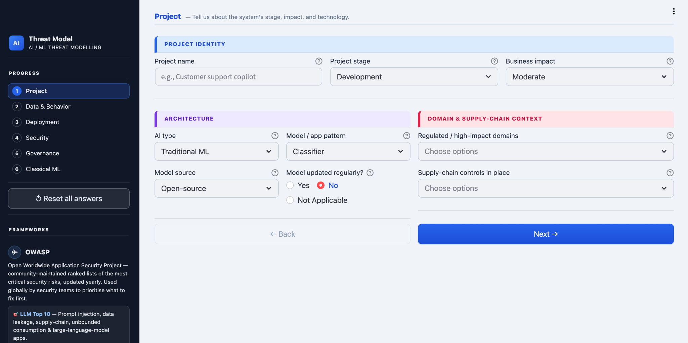
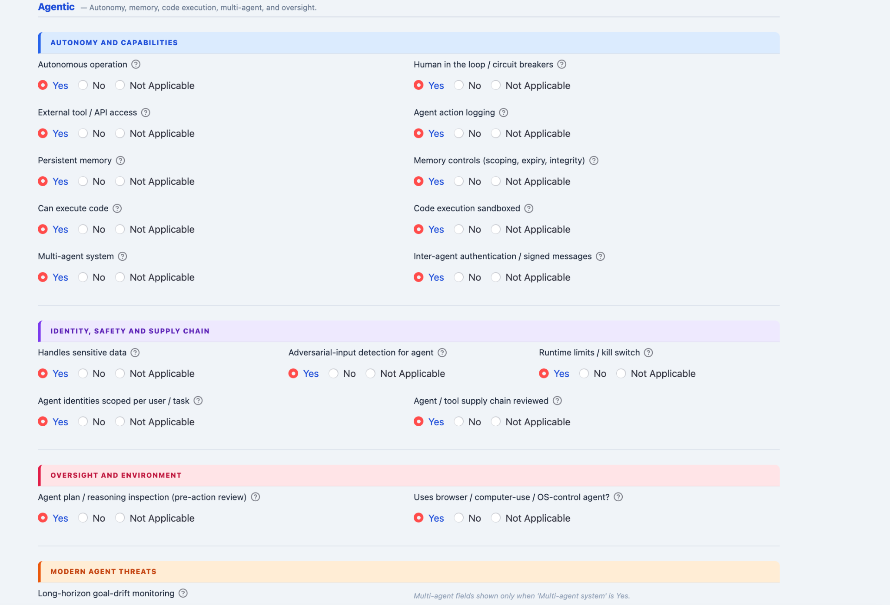
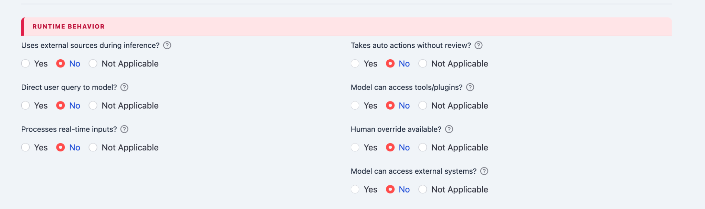
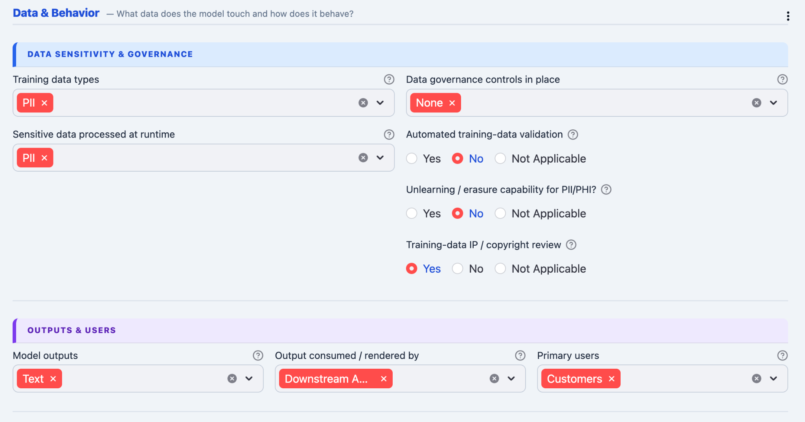
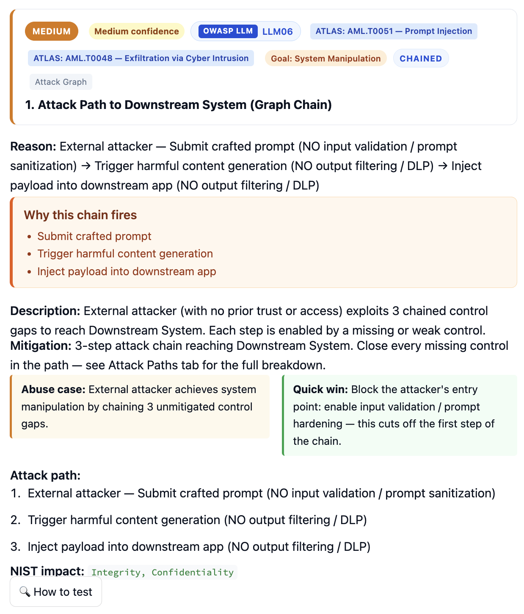
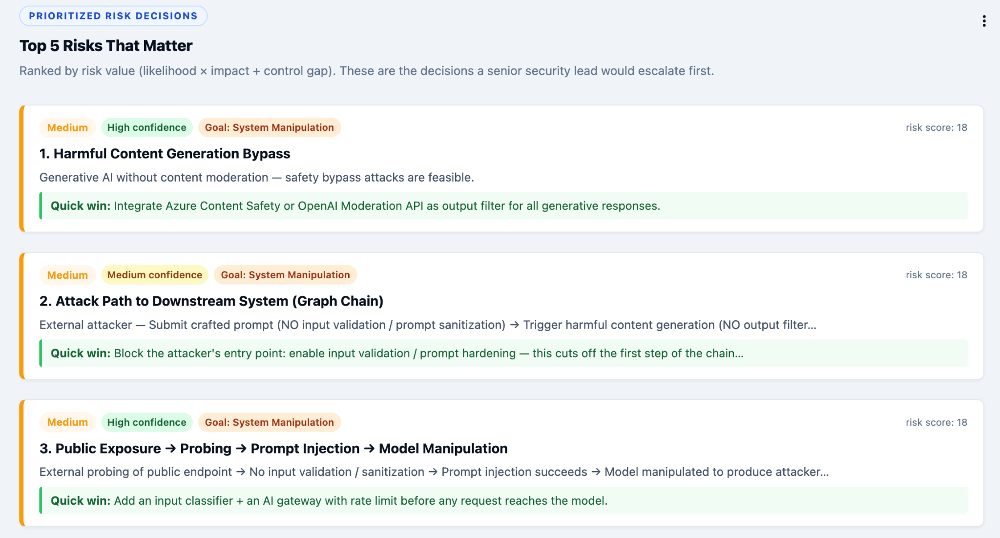

Threat Modeling for Real AI Systems
Analyze production-style AI architectures instead of isolated prompts. Model runtime behavior, autonomy, external tools, memory, and downstream attack paths.
Open-source AI threat modeling and AI security assessment platform for LLMs, RAG pipelines, agentic AI systems, MCP integrations, multimodal applications, and classical ML architectures. Map AI risks to the OWASP LLM Top 10, MITRE ATLAS, NIST AI RMF, and governance frameworks.
AI threat modeling extends traditional threat modeling to prompts, retrieval pipelines, agents, memory, tool use, model dependencies, and downstream AI-driven actions. It is essential for LLM threat modeling, RAG security assessment, MCP security, and broader AI risk management.
Analyze production-style AI architectures instead of isolated prompts. Model runtime behavior, autonomy, external tools, memory, and downstream attack paths.
Correlate multiple weak controls into AI attack chains so teams can see how medium findings become serious multi-step exploitation paths.
Map findings to OWASP LLM Top 10, MITRE ATLAS, NIST AI RMF, ISO 27001, SOC 2, GDPR, HIPAA, and the EU AI Act.
The platform supports multiple AI architectures and dynamically adjusts questions, controls, and attack paths based on the selected system and exposure level.

Assess agentic AI security across autonomous agents, browser-use agents, multi-agent systems, persistent memory, tool execution, external APIs, and code execution workflows.


Analyze runtime exposure including direct user access, autonomous execution, downstream integrations, external systems, tool usage, and real-time processing.
The assessment adapts based on architecture selection, runtime behavior, and business impact.
Capture deployment stage, business impact, AI type, model patterns, supply-chain exposure, and regulated domains.
Evaluate sensitive data handling, runtime outputs, external integrations, governance controls, and downstream systems.
Analyze prompt injection exposure, hallucination controls, system prompt leakage risk, moderation gaps, and output handling.


The assistant helps translate architecture context into actionable controls aligned with the OWASP LLM Top 10, including prompt injection, insecure output handling, training data exposure, excessive agency, and supply chain issues.
Model prompt injection, indirect prompt injection, retrieval poisoning, and unsafe context loading across RAG systems.
Assess excessive permissions, untrusted tool invocation, browser automation misuse, and agent escalation paths.
Review system prompt leakage, sensitive output exposure, untrusted transformations, and model governance gaps.
Use MITRE ATLAS to turn architecture review into mapped adversary techniques and AI attack chains that teams can communicate to engineering and leadership.

Findings are not treated as isolated issues. The engine correlates weak controls into deterministic attack paths.


Generate security reporting understandable by AppSec teams, AI governance leaders, architects, risk stakeholders, and developers.

Risks are ranked based on likelihood, impact, exploitability, and missing control correlation.


Every finding includes technical and governance context.
Google rewards educational depth, and security teams need real methodology. These sections are designed for both.
Classic threat modeling focuses on services, identities, and network trust. AI systems add prompts, model behavior, retrieval trust, autonomy, tool permissioning, evaluation loops, and data provenance.
Review source trust, retrieval authorization, document provenance, prompt injection resistance, output guardrails, and sensitive data handling across the full retrieval pipeline.
Use the platform for AI architecture reviews, security sign-off before launch, third-party AI risk reviews, governance reporting, and post-incident AI attack surface analysis.
Document memory stores, autonomy levels, approval steps, browser automation, code execution boundaries, identity assumptions, and kill-switch design.
Answers for high-intent searches around AI threat modeling, RAG security assessment, and AI governance.
The hosted version may take a few seconds to wake up if inactive due to free-tier hosting.
Open AI Threat Modeling Assistant